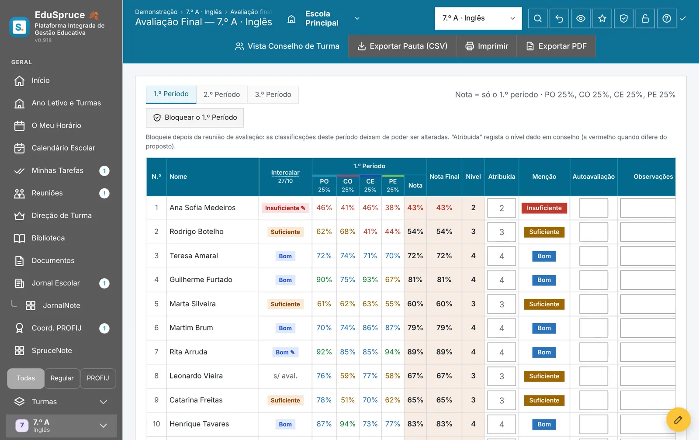
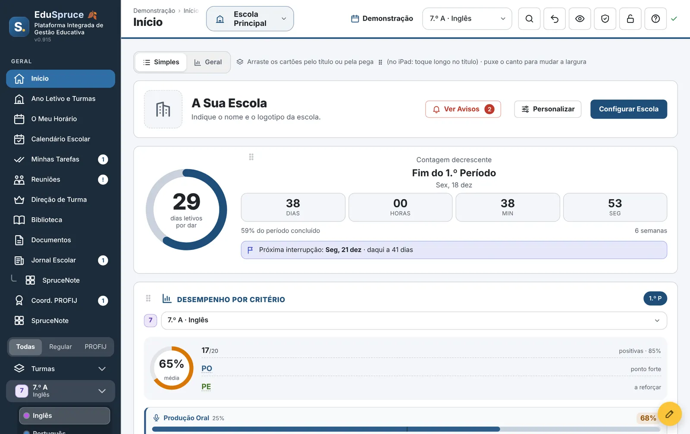
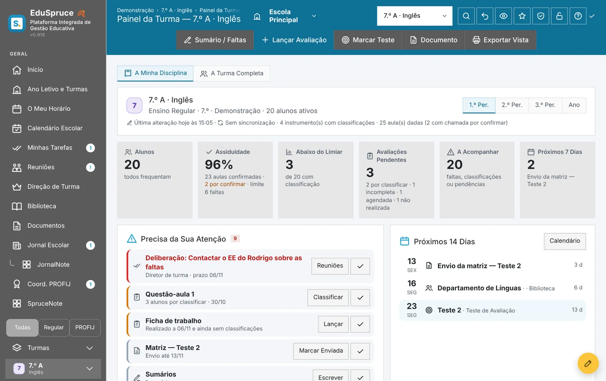
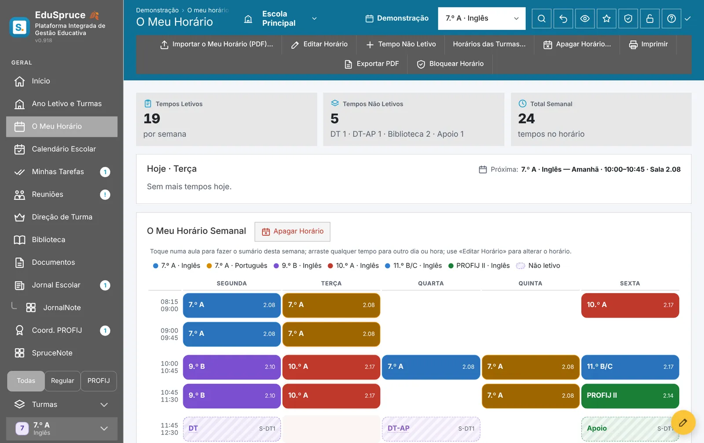
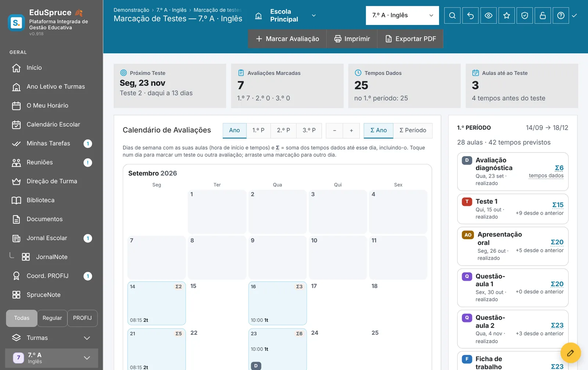
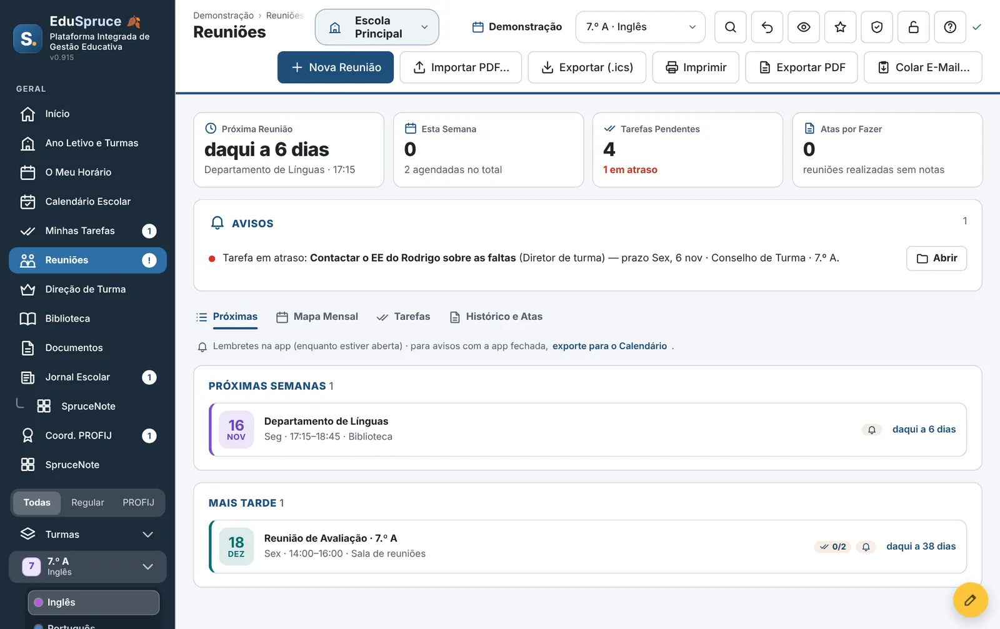
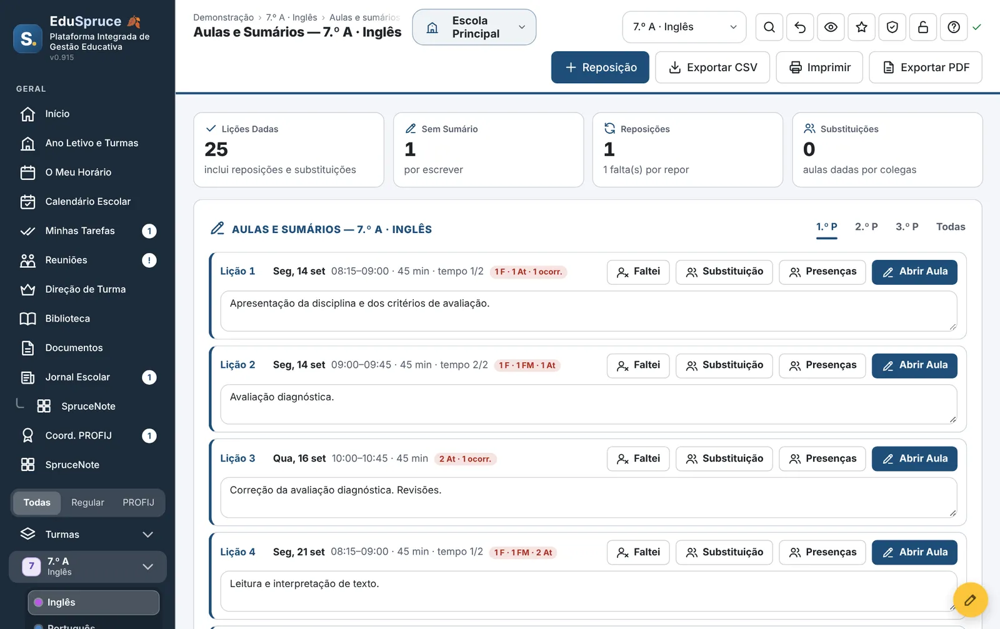
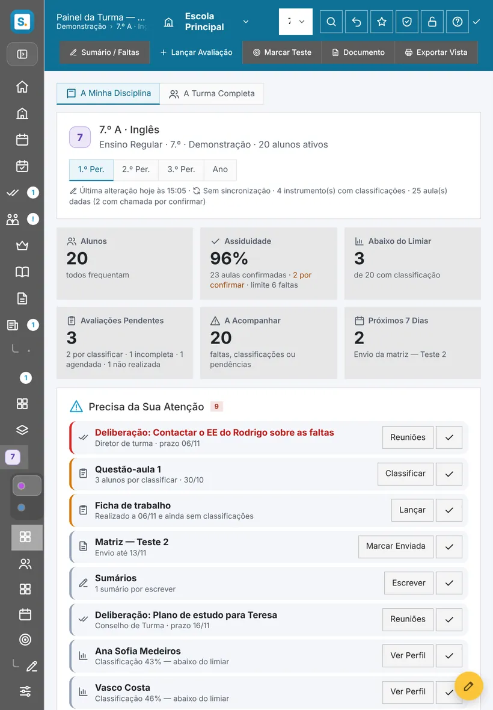

Menos papelada.
Mais tempo para ensinar.
Avaliação, sumários, horário, reuniões e direção de turma numa só app, feita para o iPad e para a forma como as escolas portuguesas trabalham. Os dados ficam encriptados na sua própria conta.

O ano letivo inteiro, sem folhas soltas
Do primeiro sumário à pauta final: o EduSpruce junta o trabalho que hoje está espalhado por cadernos, folhas de Excel e e-mails.
Avaliação por domínios
Critérios, ponderações e perfis de aprendizagem. Classificações calculadas por período, com nível ou escala de 0 a 20 no secundário.
Aulas e sumários
Lições numeradas a partir do horário, faltas, presenças, substituições e reposições. Modo Aula para usar dentro da sala.
Horário importado
Leia o horário a partir do PDF da escola. Calendário escolar, interrupções e contagem até ao fim do período.
Direção de turma
Conselho de turma, avaliação intercalar, contactos com encarregados de educação e atas.
Produção oral
Grelhas por parâmetro com gravação, trabalho a pares e ligação direta ao instrumento de avaliação.
Cursos profissionais
Módulos e UFCD, matriz e planeamento, pontos de situação e coordenação PROFIJ, sem misturar com o ensino regular.
Jornal escolar
Peças, prazos, equipa e paginação do jornal da escola, com o JornalNote para organizar ideias.
SpruceNote
Um quadro livre com notas, listas, tabelas, áudio, vídeo, mapas, esboços e ficheiros: planificar uma unidade ou preparar uma reunião.
Documentos prontos
Pautas, relatórios e fichas de aluno exportados para PDF ou Excel, prontos a entregar.
Abre a app e sabe o que tem para hoje
Um painel que se arruma à sua maneira: arraste cartões, mude-lhes a largura e o espaço que sobra fica livre para outro.
- Contagem até ao fim do período e próxima interrupção
- Desempenho por critério em cada turma
- Avisos de tarefas, reuniões e prazos em atraso

Cada turma num relance
Assiduidade, alunos abaixo do limiar, avaliações por lançar e o que vem nos próximos dias, com o passo seguinte a um toque.
- Marque testes e momentos de avaliação no calendário
- Lance classificações por item ou por domínio
- Vista própria para o conselho de turma

O horário faz o resto
Importe o horário e as lições numeram-se sozinhas. Escreva o sumário no fim da aula e marque faltas sem sair do mesmo ecrã.
- Horário semanal com tempos letivos e não letivos
- Substituições e reposições contabilizadas
- Exportação para CSV, PDF e calendário

O calendário de avaliações do ano inteiro
Marque testes e momentos de avaliação completos: a produção oral fica na aula seguinte e as revisões na aula anterior, já no sumário.
- Limite de testes por semana e testes de outras disciplinas
- Arraste para mudar de dia
- Envio da matriz lembrado a tempo

Reuniões com ata e tarefas
Convocatórias importadas do PDF, mapa mensal, tarefas com prazo e o histórico de atas, tudo ligado às turmas certas.
- Lembretes antes de cada reunião
- Deliberações que passam a tarefas
- Exportação para o calendário (.ics)

Cada lição no seu lugar
Faltas, presenças, substituições e reposições contadas sem esforço, com o sumário escrito na própria aula.
- Numeração automática das lições
- Modo Aula para usar na sala
- Exportação para CSV e PDF

Os dados dos alunos não saem do seu controlo
O EduSpruce não tem servidores que recebam dados de alunos. Tudo é encriptado no seu aparelho antes de ser guardado na sua própria nuvem.
Encriptado no aparelho
AES-256 com uma palavra-passe que só o professor conhece. Nem o autor do EduSpruce nem o fornecedor da nuvem conseguem ler os dados.
Na sua conta
Sincroniza com o seu Google Drive ou OneDrive. Abre no iPad, no computador da escola ou em casa, sempre atualizado.
Só leitura do programa da escola
Pode importar listas, horários e pautas. O EduSpruce nunca escreve no programa de gestão da escola.
Leia a Política de Privacidade e os Termos de Serviço.

Na sala de aula, na sala de professores, em casa
Instala-se a partir do navegador, sem loja de aplicações, e funciona como uma app: ecrã inteiro, notificações e uso com o teclado ou com o dedo.
- iPad, iPhone, Mac, Windows e Chromebook
- Tema SGE por predefinição, com outros seis à escolha
- Código de acesso para bloquear a app em segundos
- Modo de privacidade para projetar sem mostrar notas
Pronto em poucos minutos
Abra a app
Entre em EduSpruce no navegador. No iPad, toque em Partilhar › Adicionar ao ecrã principal.
Ligue a sua nuvem
Escolha Google Drive ou OneDrive e defina a palavra-passe de encriptação. Os dados passam a acompanhá-lo em todos os aparelhos.
Importe as turmas
Traga as listas de alunos e o horário da escola. Experimente primeiro com a demonstração, se preferir.
Antes de começar
Preciso de instalar alguma coisa?
Não. O EduSpruce abre no navegador. Se o adicionar ao ecrã principal, passa a abrir em ecrã inteiro como qualquer outra app.
Onde ficam os dados dos meus alunos?
Na sua conta Google Drive ou OneDrive, encriptados no aparelho antes de saírem dele. O EduSpruce não tem servidores com dados de alunos.
O EduSpruce substitui o programa de gestão da escola?
Não. É o caderno do professor: prepara a avaliação, os sumários e as reuniões. Pode importar dados do programa da escola, mas nunca escreve nele.
Serve para cursos profissionais?
Sim. Tem módulos e UFCD, matriz, planeamento e pontos de situação, e uma área de coordenação, separados do ensino regular.
E se perder o iPad?
Os dados estão na sua nuvem. Entre noutro aparelho com a mesma conta e a palavra-passe de encriptação e continua onde parou.
Posso começar do zero?
Sim. Nas Definições pode apagar tudo o que o EduSpruce guardou na sua conta e começar um novo ano limpo.
Experimente com a sua próxima turma
Abra a demonstração, explore com dados fictícios e, quando estiver pronto, traga as suas turmas.